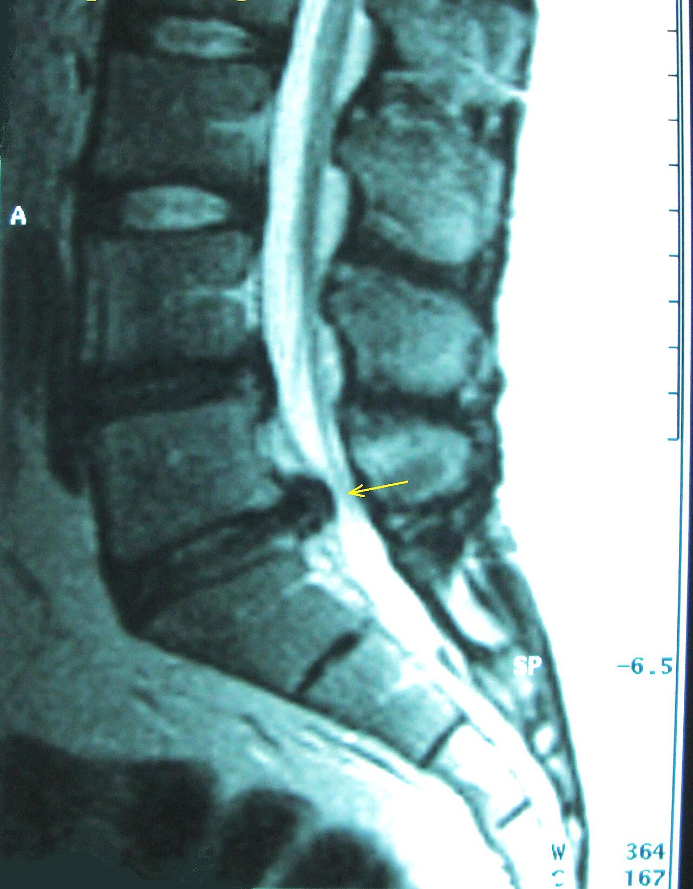

Ficha del catálogo
Hernia discal lumbar
- Sistema
- Nervioso
- Modalidad
- RM
- Región
- Columna
- Dificultad
- Intermedio
Desplazamiento del material del núcleo pulposo más allá de los límites del anillo fibroso, que puede comprimir las raíces nerviosas y producir dolor irradiado a la pierna. La resonancia es el estudio de elección porque muestra disco, raíces y médula.
Técnica
Cortes sagitales y axiales de columna lumbar en secuencias T1 y T2, sin necesidad de contraste salvo en pacientes ya operados, donde el gadolinio ayuda a distinguir fibrosis de hernia recidivante.
Qué observar
- Pérdida de señal del disco en T2 (disco negro), que indica deshidratación degenerativa
- Terminología precisa: Protrusión cuando la base es más ancha que el material herniado, y extrusión cuando ocurre lo contrario
- Localización del fragmento: Central, subarticular, foraminal o extraforaminal, dato que determina qué raíz se afecta
- Grado de compresión del saco dural y de las raíces nerviosas
- Fragmento libre (secuestro) migrado hacia arriba o hacia abajo respecto al disco de origen
- Estenosis del canal lumbar asociada, valorando el diámetro anteroposterior
Hallazgos
Material discal que sobrepasa el margen vertebral con compromiso del espacio epidural y contacto con las estructuras nerviosas adyacentes.
Perlas
Las hernias discales aparecen en un porcentaje muy alto de personas completamente asintomáticas, y la proporción aumenta con la edad. Por eso el informe debe correlacionarse siempre con la clínica: Lo que importa es si la hernia comprime la raíz que corresponde a los síntomas del paciente.
Diagnóstico diferencial
- Estenosis del canal lumbar
- El estrechamiento es circunferencial y multifactorial, por hipertrofia facetaria y del ligamento amarillo además del disco, y produce claudicación neurógena en lugar de dolor radicular puro.
- Quiste sinovial facetario
- Es una lesión redondeada de contenido líquido adyacente a una faceta artrósica, situada en la parte posterolateral del canal y no en continuidad con el disco.
- Fibrosis posquirúrgica
- Realza de forma precoz y homogénea tras el gadolinio y no produce efecto de masa, mientras que la hernia recidivante no realza en su interior o lo hace solo en la periferia.
- Tumor intrarraquídeo o metástasis epidural
- Se identifica una masa que realza y que puede asociarse a destrucción ósea, con extensión que no respeta el nivel discal.
- Espondilodiscitis
- Hay edema y realce de dos platillos contiguos con destrucción del disco intermedio y colección paravertebral o epidural.
- Neuropatía periférica o radiculopatía de otro origen
- La imagen no muestra compresión que corresponda al territorio de los síntomas, lo que obliga a buscar otras causas fuera de la columna.
Simuladores
- El abombamiento discal difuso, muy frecuente y con frecuencia asintomático, no es una hernia y debe describirse como tal para no inducir tratamientos innecesarios.
- Los plexos venosos epidurales prominentes pueden simular material discal en el receso lateral (el contraste ayuda a diferenciarlos por su realce).
- Los artefactos de truncamiento y de movimiento generan líneas dentro del saco dural que se confunden con estructuras patológicas.
- Las variantes de transición lumbosacra provocan errores de numeración de niveles, con el consiguiente riesgo de intervenir el segmento equivocado.
Por modalidad
- RM
- Estudio de elección: Muestra el disco, el saco dural, las raíces y la médula, y con gadolinio distingue fibrosis de hernia recidivante en el paciente operado.
- TC
- Alternativa cuando la resonancia está contraindicada; define bien el hueso, la calcificación discal y la estenosis ósea, y guía procedimientos.
- RX
- Valora alineación, altura discal e inestabilidad con proyecciones dinámicas, pero no muestra el disco ni las raíces.
- US
- Sin papel diagnóstico en el adulto, aunque se emplea para guiar infiltraciones y bloqueos.
Protocolo
Se adquieren secuencias sagitales potenciadas en T1 y en T2 que abarquen desde la unión dorsolumbar hasta el sacro, y axiales angulados y paralelos a cada espacio discal de interés, habitualmente desde L3 hasta S1, con cortes finos. Se añade una secuencia con supresión grasa sensible al líquido cuando se busca edema óseo, infección o fractura reciente. El contraste no es necesario de rutina; se reserva para el paciente ya operado, donde se compara el estudio antes y después de administrar gadolinio para separar el tejido cicatricial, que realza, de la hernia recidivante, que no lo hace. El estudio se realiza en decúbito supino con las piernas ligeramente flexionadas para reducir la lordosis.
Clasificación
La terminología estandarizada de la patología discal lumbar distingue el disco normal, el abombamiento, que afecta a más del veinticinco por ciento de la circunferencia y no se considera hernia, y la hernia propiamente dicha, que se subdivide en protrusión, cuando la base es más ancha que el material desplazado, y extrusión, cuando ocurre lo contrario; el fragmento que pierde continuidad con el disco se denomina secuestro. La localización se describe como central, subarticular o del receso lateral, foraminal y extraforaminal. La degeneración discal se gradúa con la escala de Pfirrmann y los cambios de los platillos con los tipos de Modic.
Errores frecuentes
- Usar de forma imprecisa los términos abombamiento, protrusión y extrusión, ya que tienen definiciones concretas y connotaciones clínicas distintas.
- Informar la hernia sin especificar qué raíz queda comprometida, que es el dato que permite correlacionar con la clínica.
- Atribuir los síntomas a hallazgos que son muy frecuentes en personas asintomáticas.
- Valorar al paciente operado sin contraste, lo que impide distinguir fibrosis de hernia recidivante.

hernia disco lumbar ciatica resonancia raiz nerviosa protrusion